Analisis Klaster (Lanjutan)
Density-Based · Bi-Clustering · Evaluasi Model
Bahan Belajar UAS Data Mining — Pertemuan 10 (Politeknik Statistika STIS)
1. Pengantar & Cakupan Materi Pertemuan 10
Pada pertemuan sebelumnya (Pertemuan 9), kita telah mempelajari metode klaster berbasis partisi (K-Means, PAM, CLARA) dan hierarki (AGNES, DIANA). Pertemuan 10 melengkapi materi analisis klaster dengan tiga pilar penting:
Mengelompokkan data berdasarkan kepadatan spasial (DBSCAN & OPTICS). Mampu menemukan klaster berbentuk arbitrer dan tahan noise.
Mengelompokkan baris (objek) dan kolom (fitur) secara simultan untuk menemukan submatriks koheren pada data dimensi tinggi.
Menilai tendensi pengelompokan alami (Hopkins Stat & VAT) serta validasi internal, eksternal, dan relatif.
2. Density-Based Clustering: Konsep Dasar DBSCAN
Fitur Utama Density-Based Methods
- Mampu menemukan klaster dengan bermacam-macam bentuk yang tidak teratur (arbitrary shapes).
- Sangat tangguh dalam menangani noise dan outlier.
- Hanya membutuhkan satu kali pemindaian data (one scan).
- Memerlukan parameter kepadatan sebagai kondisi terminasi.
- Pelopor utama: DBSCAN (Ester et al., KDD'96), OPTICS (Ankerst et al., SIGMOD'99), DENCLUE (Hinneburg & Keim, KDD'98).
Dua Parameter Kunci DBSCAN
Radius maksimum dari lingkungan bertetangga di sekitar sebuah titik ($N_{\text{Eps}}(p) = \{q \in D \mid \text{dist}(p, q) \le \text{Eps}\}$).
Jumlah minimum titik yang harus ada di dalam lingkungan $\text{Eps}$ dari suatu titik (termasuk titik itu sendiri).
Tiga Jenis Titik dalam DBSCAN
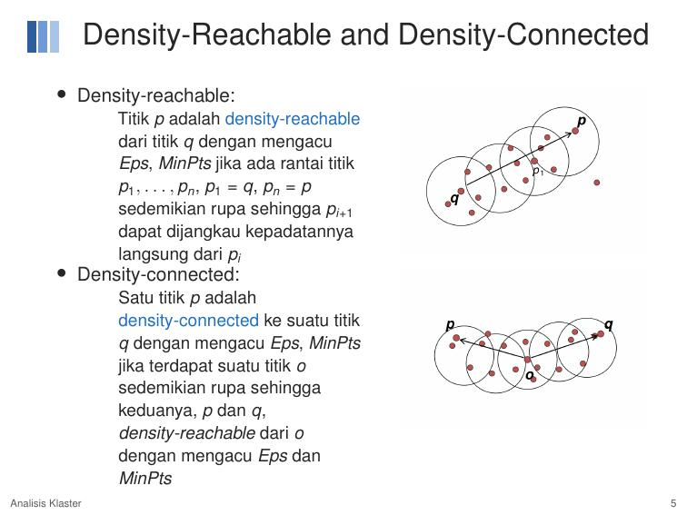
| Tipe Titik | Kriteria Matematis | Peran dalam Pembentukan Klaster |
|---|---|---|
| Core Point (Titik Inti) | $$|N_{\text{Eps}}(p)| \ge \text{MinPts}$$ Memiliki minimal $\text{MinPts}$ titik dalam radius $\text{Eps}$. |
Pondasi utama klaster. Memulai dan memperluas pembentukan klaster. |
| Border Point (Titik Batas) | $$|N_{\text{Eps}}(p)| < \text{MinPts}$$ Titik tetangganya kurang dari $\text{MinPts}$, tetapi titik ini berada di dalam lingkungan radius $\text{Eps}$ dari suatu Core Point. |
Menjadi anggota klaster di bagian tepi/perbatasan, namun tidak dapat memperluas klaster lebih jauh. |
| Noise Point (Derau / Outlier) | Bukan Core Point dan bukan Border Point. | Dibuang / dilabeli sebagai noise. Titik berada di wilayah yang sangat renggang. |
3. Hubungan Kepadatan: Directly Reachable, Density-Reachable, & Density-Connected
Konsep hubungan kepadatan adalah definisi formal yang paling sering keluar di ujian teori!
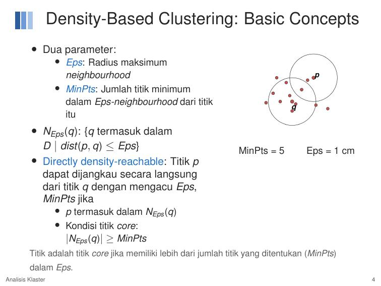
1. Directly Density-Reachable
Titik $p$ adalah directly density-reachable dari titik $q$ mengacu pada $\text{Eps}$ dan $\text{MinPts}$ jika:
- $p \in N_{\text{Eps}}(q)$ (jarak $d(p, q) \le \text{Eps}$), dan
- $q$ adalah sebuah Core Point.
2. Density-Reachable
Titik $p$ adalah density-reachable dari $q$ jika terdapat rantai titik perantara $p_1, p_2, \dots, p_n$ dengan $p_1 = q$ dan $p_n = p$, sedemikian rupa sehingga setiap $p_{i+1}$ adalah directly density-reachable dari $p_i$.
3. Density-Connected
Titik $p$ adalah density-connected ke titik $q$ jika terdapat sebuah titik $o$ sedemikian rupa sehingga kedua titik $p$ dan $q$ sama-sama density-reachable dari titik $o$.
- Maximal: Jika $p \in C$ dan $q$ density-reachable dari $p$, maka $q \in C$.
- Connected: Untuk setiap pasangan $p, q \in C$, titik $p$ adalah density-connected ke $q$.
4. Algoritma, Kompleksitas, dan Penentuan Parameter DBSCAN
Langkah-Langkah Algoritma DBSCAN (Slide 7)
- Pilih sebuah titik $p$ yang belum dikunjungi secara acak dari database.
- Ambil semua titik yang density-reachable dari $p$ mengacu pada parameter $\text{Eps}$ dan $\text{MinPts}$.
- Jika $p$ adalah Core Point, sebuah klaster baru terbentuk dan seluruh titik yang terjangkau digabungkan ke dalam klaster tersebut (lakukan ekspansi lingkungan secara rekursif).
- Jika $p$ adalah Border Point (atau noise sementara), tandai titik tersebut dan lanjutkan mengunjungi titik berikutnya dari database.
- Lanjutkan proses ini sampai seluruh titik dalam basis data selesai diproses!
- Jika menggunakan struktur pengindeksan spasial (seperti $R^*$-tree atau k-d tree): $O(N \log N)$.
- Jika tanpa indeks spasial (pencarian sekuensial penuh): $O(N^2)$.
Kelemahan DBSCAN (Materi Ujian Analisis!)
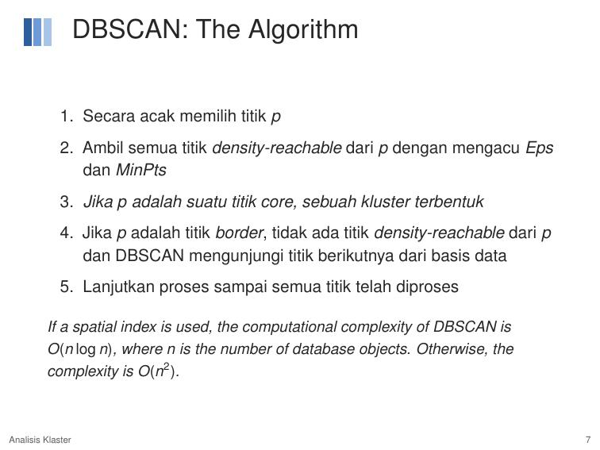
Perubahan kecil pada $\text{Eps}$ mengubah jumlah klaster secara drastis:
- Jika $\text{Eps}$ terlalu besar: Seluruh titik melebur menjadi satu klaster raksasa.
- Jika $\text{Eps}$ terlalu kecil: Klaster pecah menjadi serpihan kecil-kecil dan banyak titik valid dianggap noise.
Satu nilai pasangan $(\text{Eps}, \text{MinPts})$ bersifat global. Jika dalam satu dataset terdapat klaster padat dan klaster renggang, DBSCAN tidak bisa mendeteksi keduanya secara simultan.
Solusi: Gunakan OPTICS!
Cara Menentukan Parameter $\text{Eps}$ & $\text{MinPts}$ (k-Distance Graph)
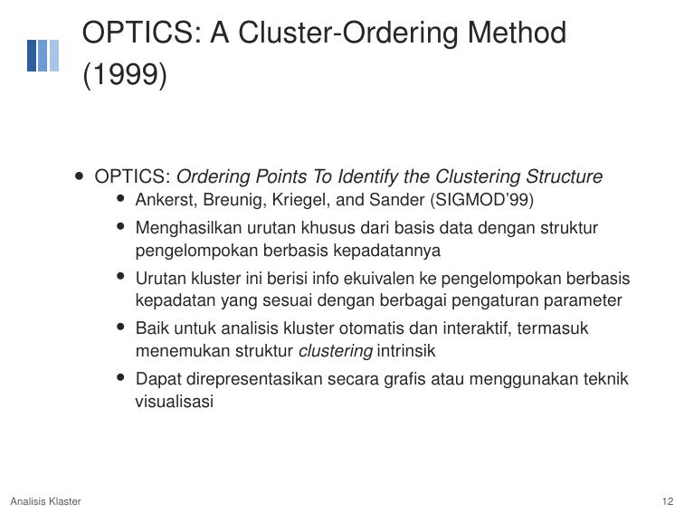
- Pilih nilai $k = \text{MinPts}$ (aturan praktis umum: $k = 2 \times \text{dimensi}$ atau $\text{MinPts} \ge 4$).
- Hitung jarak setiap titik ke tetangga terdekat ke-$k$ ($k$-NN distance).
- Urutkan seluruh jarak $k$-NN dari yang terkecil ke terbesar dan plotkan grafiknya.
- Titik dalam klaster memiliki jarak $k$-NN yang landai dan seragam; titik noise mengalami lonjakan tajam.
- Nilai $\text{Eps}$ optimal dipilih pada titik siku ("knee" / "elbow") dari plot $k$-distance!
5. OPTICS: Ordering Points To Identify the Clustering Structure
Dua Konsep Jarak Tambahan dalam OPTICS
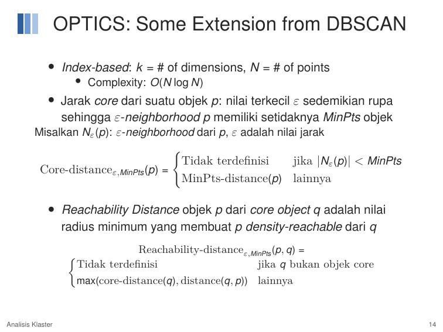
Reachability Plot & Interpretasi "Lembah" (Valleys)
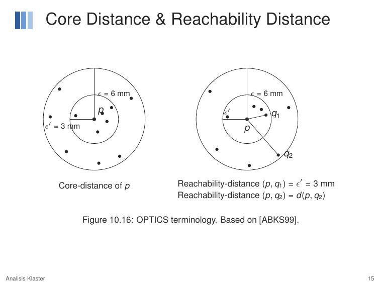
- Setiap "lembah" (valley / cekungan ke bawah) pada plot berkaitan dengan satu klaster yang padat.
- Puncak tajam di antara lembah menandakan titik-titik noise atau pemisah antar klaster.
- Klaster bersarang (nested clusters): Muncul sebagai cekungan kecil di dalam lembah yang lebih lebar.
- Membuat garis horizontal potong pada nilai $\varepsilon'$ setara dengan menjalankan DBSCAN dengan parameter $\text{Eps} = \varepsilon'$.
6. Bi-Clustering (Co-Clustering / Two-Mode Clustering)
Mengapa Bi-Clustering Diperlukan?
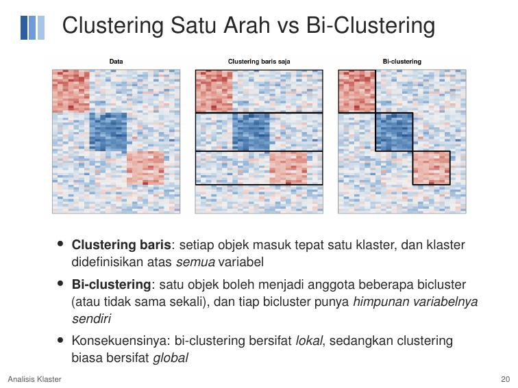
- Pada metode konvensional, kita hanya mengelompokkan baris saja (objek) dengan menggunakan seluruh kolom (fitur).
- Pada data berdimensi tinggi (misal microarray ekspresi ribuan gen atau puluhan indikator pembangunan), suatu kelompok objek seringkali hanya konsisten pada sebagian kecil variabel. Variabel lainnya bertindak sebagai derau (noise) yang mengaburkan struktur.
- Bi-clustering memecahkan masalah ini dengan mengelompokkan baris dan kolom secara simultan untuk menemukan submatriks yang koheren!
| Karakteristik | Clustering Baris Biasa | Bi-Clustering |
|---|---|---|
| Arah Pengelompokan | Satu arah (hanya baris) | Dua arah (baris & kolom serentak) |
| Cakupan Fitur | Menggunakan seluruh variabel ($m$) | Hanya subhimpunan variabel relevan ($J \subseteq Y$) |
| Keanggotaan Objek | Tepat 1 klaster (partisi eksklusif) | Dapat masuk beberapa bicluster (tumpang tindih / overlapping) atau tidak masuk sama sekali |
| Tujuan Pola | Jarak geometris titik berdekatan | Pola koherensi perubahan nilai submatriks |
7. Tipe-Tipe Bi-Cluster (Madeira & Oliveira, 2004)
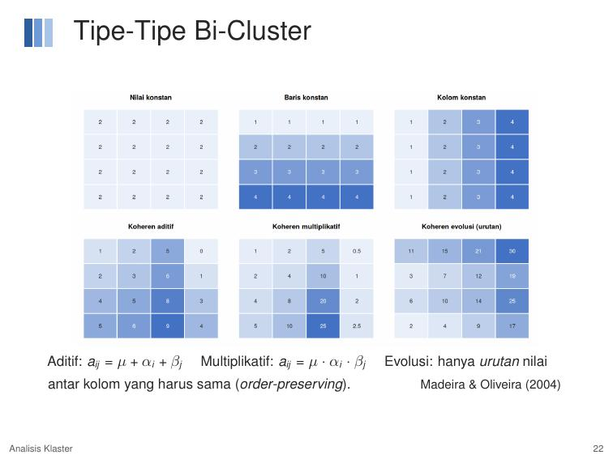
| Tipe Bi-Cluster | Model Matematis | Karakteristik Visual |
|---|---|---|
| 1. Nilai Konstan | $$a_{ij} = \mu$$ | Seluruh sel dalam submatriks memiliki angka yang identik (misal semua sel bernilai 1 pada matriks biner). |
| 2. Konstan Baris / Kolom | $$a_{ij} = \mu + \alpha_i \quad \text{atau} \quad a_{ij} = \mu + \beta_j$$ | Nilai sel konstan di sepanjang baris tertentu atau di sepanjang kolom tertentu. |
| 3. Koheren Aditif | $$a_{ij} = \mu + \alpha_i + \beta_j$$ | Pola naik-turun antar kondisi bergerak sejajar (paralel). Selisih antar baris konsisten di setiap kolom. |
| 4. Koheren Multiplikatif | $$a_{ij} = \mu \cdot \alpha_i \cdot \beta_j$$ | Pola perubahan nilai bersifat proporsional/rasio terhadap pengali baris dan kolom. |
| 5. Order-Preserving (Evolusi) | $$\text{rank}(a_{i, j_1}) < \text{rank}(a_{i, j_2}) < \dots$$ | Hanya urutan/peringkat relatif nilai antar kolom yang harus sama untuk seluruh baris anggota. |
8. Algoritma Cheng & Church (2000) & Rumus Mean Squared Residue (MSR)
Algoritma paling terkenal untuk menemukan bicluster koheren aditif pada data ekspresi gen.
Formula Residu Sel ($r_{ij}$) & Mean Squared Residue ($H(I, J)$)
• $a_{ij}$: nilai observasi pada baris $i$ kolom $j$
• $a_{iJ}$: rata-rata baris $i$ pada subhimpunan kolom $J$ ($a_{iJ} = \frac{1}{|J|}\sum_{j \in J} a_{ij}$)
• $a_{Ij}$: rata-rata kolom $j$ pada subhimpunan baris $I$ ($a_{Ij} = \frac{1}{|I|}\sum_{i \in I} a_{ij}$)
• $a_{IJ}$: rata-rata seluruh sel dalam submatriks $A_{IJ}$ ($a_{IJ} = \frac{1}{|I||J|}\sum_{i \in I}\sum_{j \in J} a_{ij}$)
Sifat Penting MSR ($H(I, J)$)
- $H(I, J) = 0 \iff$ submatriks sempurna koheren aditif ($a_{ij} = \mu + \alpha_i + \beta_j$).
- Submatriks $(I, J)$ disebut $\delta$-bicluster jika $H(I, J) \le \delta$ untuk suatu ambang batas $\delta \ge 0$.
- Tujuan Optimasi: Menemukan $\delta$-bicluster dengan ukuran sebesar mungkin ($|I| \times |J|$ maksimal).
- Kelemahan MSR: MSR cenderung menyukai bicluster dengan variansi mendekati nol (trivially constant). Oleh karena itu, sering ditambahkan syarat batas variansi baris minimum: $\text{VAR}(I, J) > 0$.
Empat Tahapan Algoritma Cheng & Church
- Inisialisasi: Mulai dengan matriks data lengkap $A$ sebagai kandidat awal $(I, J)$.
- Node Deletion (Penghapusan Baris/Kolom): Hitung residu kuadrat rata-rata untuk setiap baris $d(i)$ dan kolom $e(j)$: $$d(i) = \frac{1}{|J|}\sum_{j \in J} r_{ij}^2, \qquad e(j) = \frac{1}{|I|}\sum_{i \in I} r_{ij}^2$$ Hapus baris atau kolom yang memiliki residu terbesar hingga nilai $H(I, J) \le \delta$. (Tersedia opsi Multiple node deletion dengan ambang $\alpha > 1$ untuk mempercepat komputasi).
- Node Addition (Penambahan Baris/Kolom): Tambahkan kembali baris/kolom yang sebelumnya dihapus jika penambahannya tidak menyebabkan $H(I, J) > \delta$.
- Masking: Ganti seluruh sel dari bicluster yang sudah ditemukan dengan nilai acak, lalu ulangi algoritma dari langkah 1 untuk menemukan bicluster berikutnya!
9. Contoh Perhitungan Manual MSR Detail (Slide 27)
Mari kita pelajari contoh numerik resmi dari Slide 27 untuk persiapan ujian hitungan:
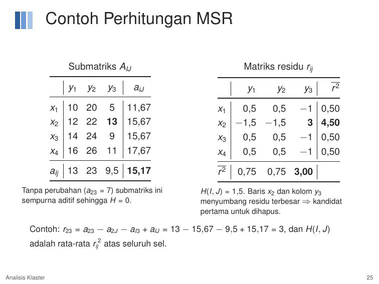
Diberikan submatriks $A_{IJ}$ berukuran $4 \times 3$ ($|I|=4, |J|=3$):
| $y_1$ | $y_2$ | $y_3$ | Rata-rata Baris ($a_{iJ}$) | |
|---|---|---|---|---|
| $x_1$ | 10 | 20 | 5 | $\frac{10+20+5}{3} = \mathbf{11.67}$ |
| $x_2$ | 12 | 22 | 13 | $\frac{12+22+13}{3} = \mathbf{15.67}$ |
| $x_3$ | 14 | 24 | 9 | $\frac{14+24+9}{3} = \mathbf{15.67}$ |
| $x_4$ | 16 | 26 | 11 | $\frac{16+26+11}{3} = \mathbf{17.67}$ |
| Rata-rata Kolom ($a_{Ij}$) | $\mathbf{13.00}$ | $\mathbf{23.00}$ | $\mathbf{9.50}$ | Rata-rata Total ($a_{IJ}$) = $\mathbf{15.17}$ |
Contoh Hitung Residu Sel $r_{23}$ (Baris 2, Kolom 3):
Tabel Matriks Residu $r_{ij}$ dan Residu Kuadrat $r_{ij}^2$:
| Sel | $y_1$ | $y_2$ | $y_3$ | Rata-rata $r_{iJ}^2$ ($d(i)$) |
|---|---|---|---|---|
| $x_1$ | $r=0.5 \implies r^2=0.25$ | $r=0.5 \implies r^2=0.25$ | $r=-1.0 \implies r^2=1.00$ | $\frac{0.25+0.25+1.0}{3} = \mathbf{0.50}$ |
| $x_2$ | $r=-1.5 \implies r^2=2.25$ | $r=-1.5 \implies r^2=2.25$ | $r=3.0 \implies r^2=9.00$ | $\frac{2.25+2.25+9.0}{3} = \mathbf{4.50}$ (Terbesar!) |
| $x_3$ | $r=0.5 \implies r^2=0.25$ | $r=0.5 \implies r^2=0.25$ | $r=-1.0 \implies r^2=1.00$ | $\mathbf{0.50}$ |
| $x_4$ | $r=0.5 \implies r^2=0.25$ | $r=0.5 \implies r^2=0.25$ | $r=-1.0 \implies r^2=1.00$ | $\mathbf{0.50}$ |
| Rata-rata $r_{Ij}^2$ ($e(j)$) | $\mathbf{0.75}$ | $\mathbf{0.75}$ | $\mathbf{3.00}$ (Terbesar!) | MSR $H(I, J) = \mathbf{1.50}$ |
Total MSR $H(I, J) = 1.50$.
Baris $x_2$ menyumbang residu terbesar ($d(2) = 4.50$) dan kolom $y_3$ menyumbang residu terbesar ($e(3) = 3.00$).
Maka baris $x_2$ atau kolom $y_3$ adalah kandidat pertama yang akan dihapus untuk menurunkan MSR menuju $\le \delta$!
10. Algoritma Bi-Clustering Lainnya & Package R
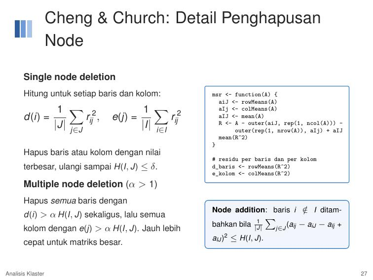
| Algoritma | Kriteria Bi-Cluster | Karakteristik & Catatan |
|---|---|---|
| Cheng & Church (2000) | $\text{MSR} \le \delta$ (koheren aditif) | Pendekatan greedy heuristic, satu bicluster per putaran, memerlukan masking. |
| Bimax (2006) | Blok konstan bernilai 1 pada matriks biner | Metode divide-and-conquer eksak; data kontinu harus dibinerisasi terlebih dahulu. |
| Plaid Model (2002) | Model aditif berlapis bertingkat | Mendukung bicluster yang tumpang tindih; pendekatan berbasis model statistik. |
| Spectral (2003) | Struktur checkerboard via SVD | Sangat cepat, mengasumsikan partisi baris dan kolom yang tegas. |
| xMotifs (2003) | Kolom dengan status/level yang sama | Sangat cocok untuk data terdiskritisasi. |
| QUBIC (2009) | Blok koheren pada graf berbobot | Sangat terukur (scalable) untuk matriks biologis raksasa. |
Sintaks di R (Package biclust)
biclust(G, method = BCCC(), delta = 0.2, alpha = 1.5, number = 3)(Cheng & Church)biclust(binarize(G), method = BCBimax(), minr = 4, minc = 4, number = 10)(Bimax)- Fungsi visualisasi:
drawHeatmap(),parallelCoordinates(),bubbleplot().
11. Evaluasi Tendensi Pengelompokan (Clustering Tendency)
A. Hopkins Statistics ($H$)
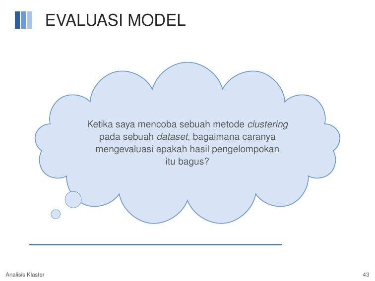
Hopkins Statistics mengukur peluang bahwa dataset berasal dari distribusi seragam (uniform).
- Hipotesis:
$H_0$: Dataset berdistribusi seragam (tidak ada struktur klaster).
$H_1$: Dataset tidak berdistribusi seragam (terdapat tendensi klaster). - Statistik Uji Hopkins ($H$): $$H = \frac{\sum_{i=1}^p y_i}{\sum_{i=1}^p x_i + \sum_{i=1}^p y_i}$$ Di mana $y_i$ adalah jarak ke tetangga terdekat dari titik buatan yang dibangkitkan seragam, dan $x_i$ adalah jarak ke tetangga terdekat dari sampel titik data riil.
- Pedoman Keputusan:
- Jika $H \approx 0.5$: Data menyebar secara seragam/acak $\to$ TIDAK COCOK untuk dikelompokkan.
- Jika $H > 0.75$: Mengindikasikan terdapat tendensi pengelompokan yang signifikan pada tingkat kepercayaan 90% $\to$ LAYAK dilakukan analisis klaster!
- Di R:
get_clust_tendency(df, n = nrow(df)-1, graph = FALSE)$hopkins_stat.
B. Visual Assessment of cluster Tendency (VAT Algorithm)
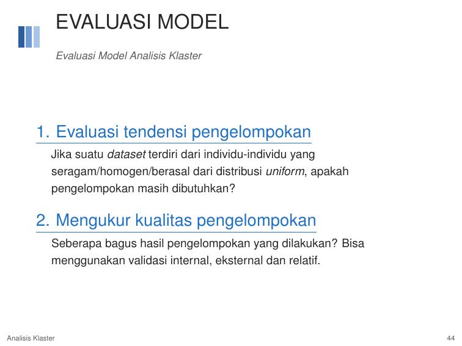
- Hitung matriks dissimilarity (DM) antar seluruh objek dengan jarak Euclidean.
- Urutkan DM sedemikian rupa sehingga objek-objek yang mirip saling berdampingan $\to$ Ordered Dissimilarity Matrix (ODM).
- Tampilkan ODM dalam bentuk gambar Ordered Dissimilarity Image (ODI).
- Ada Klaster (Data Iris): Muncul blok-blok persegi berwarna gelap di sepanjang diagonal utama. Jumlah blok gelap mencerminkan estimasi jumlah klaster alami!
- Tidak Ada Klaster (Data Acak): Gambar terlihat abu-abu bintik-bintik merata tanpa ada bentukan blok gelap yang jelas.
12. Mengukur Kualitas Pengelompokan: Tiga Validasi Klaster
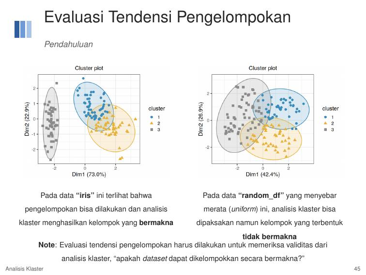
| Tipe Validasi | Sumber Informasi | Tujuan Utama |
|---|---|---|
| 1. Validasi Internal | Hanya menggunakan informasi internal dataset (tanpa data eksternal) | Mengukur seberapa baik struktur internal klaster (compactness, separation, connectivity). |
| 2. Validasi Eksternal | Membandingkan hasil klaster dengan informasi label eksternal yang tersedia | Mengukur kecocokan partisi dengan label kelas acuan (ground truth) yang sebenarnya. |
| 3. Validasi Relatif | Membandingkan hasil klaster dari berbagai parameter/algoritma | Menentukan parameter optimal (misal memilih jumlah $K$ terbaik via Elbow/Gap Stat). |
Tiga Aspek Validasi Internal (Slide 49)
- Compactness (Kohesi): Mengukur seberapa dekat objek-objek di dalam klaster yang sama. Indikator: variasi within-cluster yang serendah mungkin (minimum WSS).
- Separation (Pemisahan): Mengukur seberapa jauh jarak pemisah antar klaster yang berbeda (maksimum between-cluster variation).
- Connectivity: Mengukur sejauh mana objek-objek yang berada dalam klaster yang sama berperan sebagai tetangga terdekat mereka (nilai konektivitas semakin minimum semakin baik).
13. Indeks Kualitas: Silhouette Index, Dunn Index, & Corrected Rand Index
A. Silhouette Index & Dunn Index (Internal)
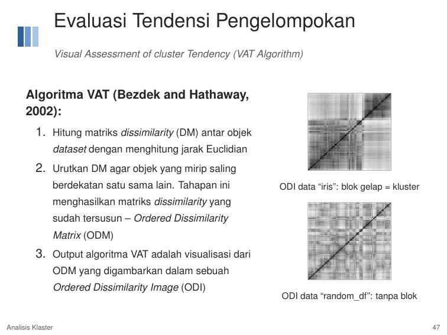
1. Silhouette Index ($s(i)$):
- Nilai mendekati $+1$: Objek terklaster sangat baik (well-clustered).
- Nilai mendekati $0$: Objek berada di batas netral antar dua klaster.
- Nilai mendekati $-1$: Objek salah masuk klaster (poorly-clustered).
2. Dunn Index ($D$):
- Nilai $D$ yang semakin tinggi menunjukkan pengelompokan yang semakin bagus!
- Di R: fungsi
cluster.stats(d, km$cluster)$dunnpada packagefpc.
B. Corrected Rand Index & VI (Eksternal)
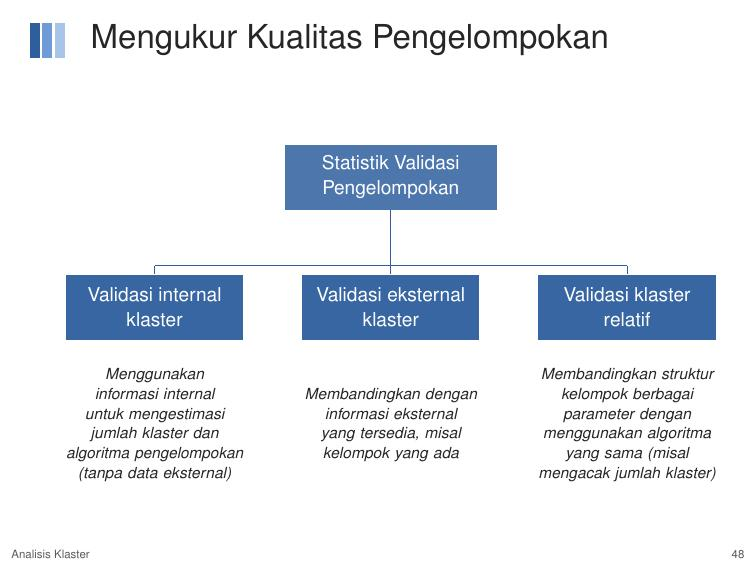
Dipakai ketika ada variabel label acuan (misal membandingkan klaster Iris dengan iris$Species).
- Corrected Rand Index (Adjusted Rand Index / ARI):
Mengukur derajat kesepakatan (similarity) antara dua partisi dengan mengoreksi faktor kebetulan (chance).
• Rentang nilai: $[-1, 1]$
• Nilai $1$ = kesepakatan sempurna (perfect agreement)
• Nilai $0$ = hasil pengelompokan setara tebakan acak murni
• Nilai $< 0$ = ketidaksesuaian sistematis (no agreement) - Variation of Information (VI): Mengukur jumlah informasi yang hilang atau diperoleh saat berpindah antar dua partisi (berbasis entropi informasi).
14. Ringkasan: Tahapan Lengkap Analisis Klaster (Slide 52)
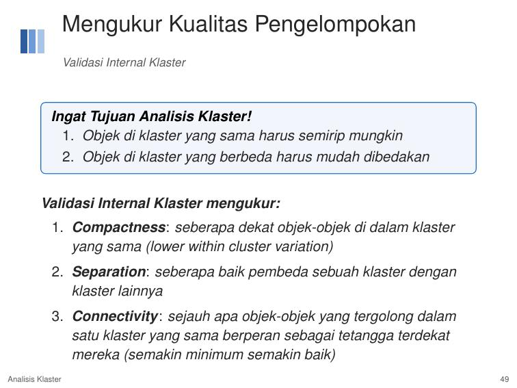
- Tahap 1: Persiapan Data (Data Preparation)
- Evaluasi tendensi pengelompokan (Uji Hopkins $H > 0.75$ & visualisasi VAT / ODI).
- Pemilihan variabel yang relevan dengan masalah dan eliminasi redundansi informasi (cek korelasi tinggi antar fitur).
- Standarisasi data (z-score atau min-max scaling jika rentang skala berbeda).
- Tahap 2: Analisis Klaster (Cluster Analysis Execution)
- Pilih keluarga metode yang tepat (Hierarki, Partisi, atau Density-based).
- Tentukan ukuran kedekatan jarak (Euclidean, Manhattan, Korelasi, dll).
- Tentukan jumlah klaster optimum ($K$) atau parameter kepadatan ($\text{Eps}, \text{MinPts}$).
- Tahap 3: Evaluasi Model (Model Evaluation)
- Validasi Internal: Hitung Silhouette Index, Dunn Index, Connectivity, dan WSS.
- Validasi Eksternal: Hitung Corrected Rand Index atau VI jika tersedia label pembanding acuan.
- Tahap 4: Interpretasi Model (Model Interpretation)
- Profiling karakteristik klaster (hitung nilai mean/modus tiap variabel per klaster).
- Visualisasi profil dan pemberian nama label bisnis yang dapat ditindaklanjuti.
15. Checklist Persiapan UAS STIS (Pertemuan 10)
- ☐ DBSCAN: Paham definisi Core ($|N_{\text{Eps}}| \ge \text{MinPts}$), Border, dan Noise.
- ☐ Relasi Kepadatan: Paham perbedaan *Directly density-reachable* (asimetris), *Density-reachable* (transitif asimetris), dan *Density-connected* (simetris).
- ☐ Kelemahan DBSCAN: Paham mengapa DBSCAN sensitif $\text{Eps}$, gagal pada kepadatan bervariasi, dan cara menentukan $\text{Eps}$ via kurva $k$-distance.
- ☐ OPTICS: Paham *Core-distance*, *Reachability-distance*, dan cara membaca lembah pada *Reachability plot*.
- ☐ Bi-Clustering: Paham alasan perlunya bi-clustering pada data dimensi tinggi, perbedaan dengan klaster baris, dan 5 tipe bi-cluster (aditif, multiplikatif, evolusi, dll).
- ☐ Cheng & Church: Hafal rumus residu sel $r_{ij} = a_{ij} - a_{iJ} - a_{Ij} + a_{IJ}$ dan formula MSR $H(I, J)$. Mampu menghitungnya secara manual!
- ☐ Tendensi Klaster: Hafal ambang batas Hopkins Statistics ($H > 0.75 \implies$ ada tendensi klaster) dan cara membaca blok gelap pada VAT/ODI.
- ☐ Tiga Validasi: Bisa membedakan validasi internal, eksternal, dan relatif.
- ☐ Metrik Validasi: Paham interpretasi Silhouette ($-1$ s.d $+1$), Dunn Index (makin tinggi makin baik), dan Corrected Rand Index ($1$ = sempurna).